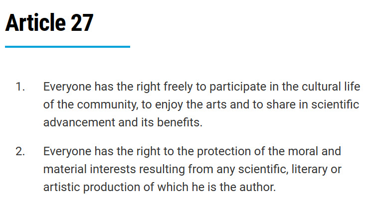
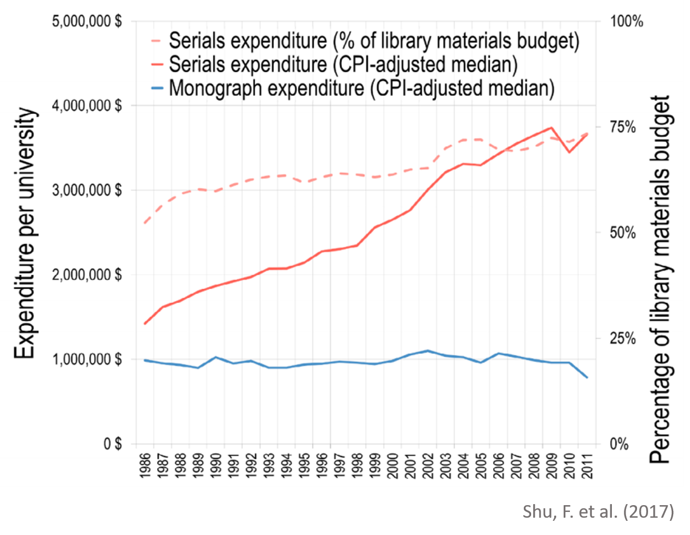
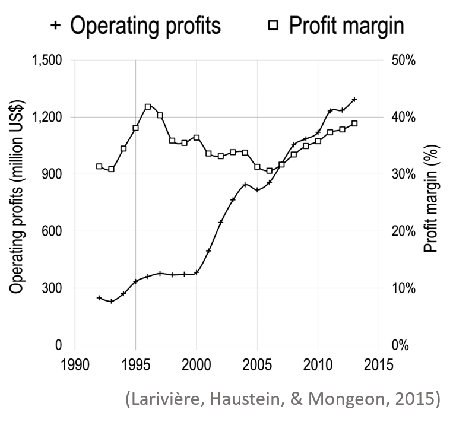
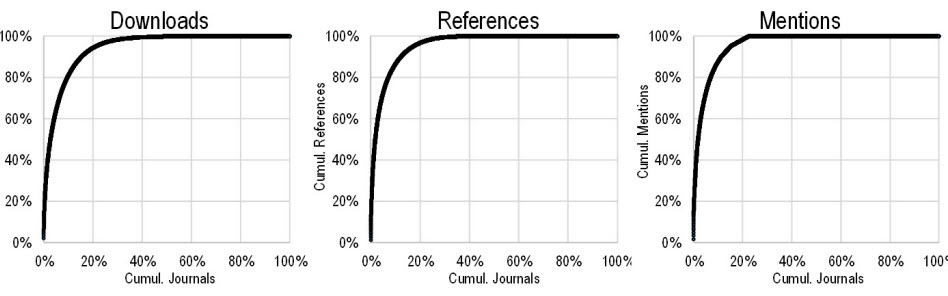
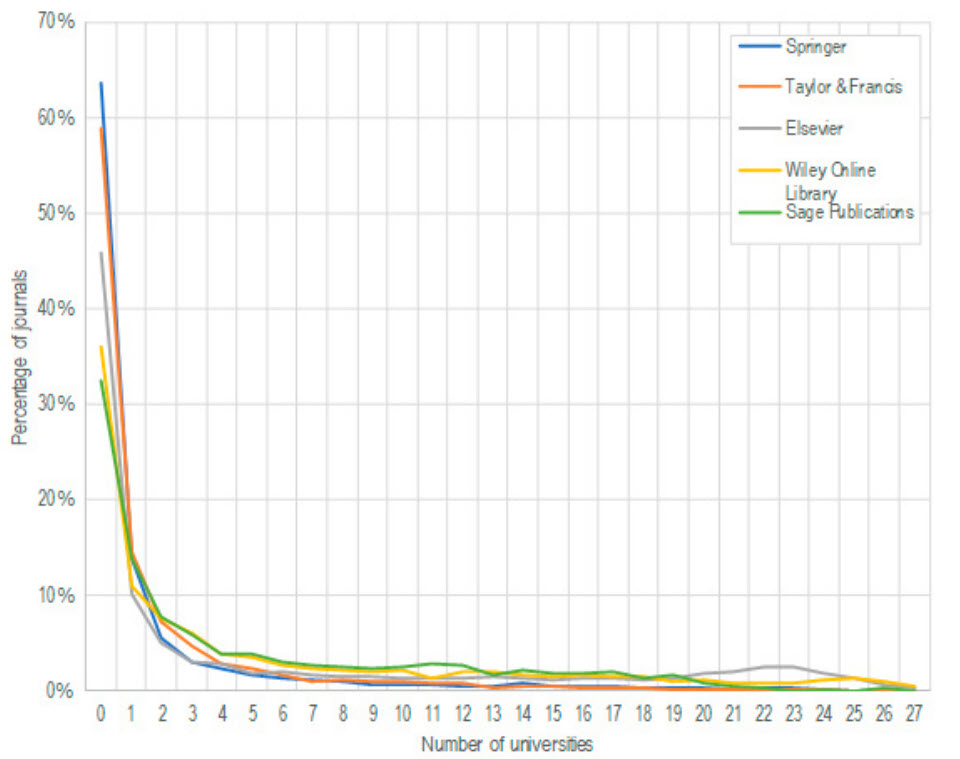
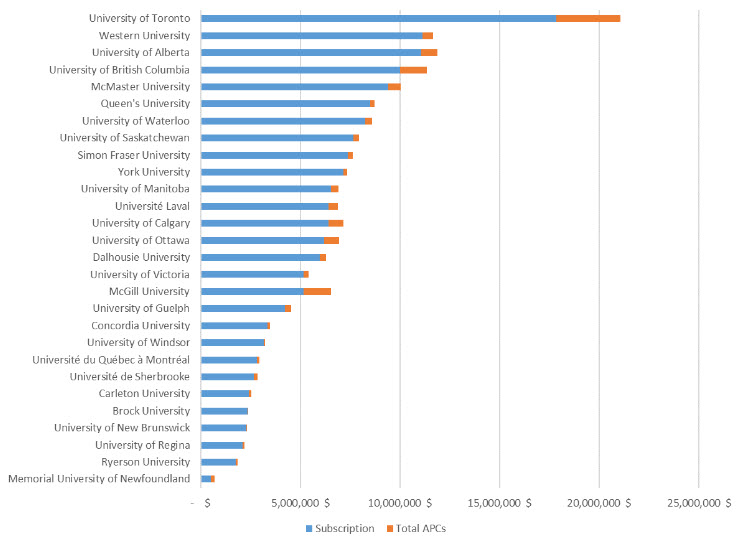
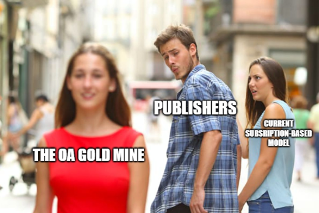
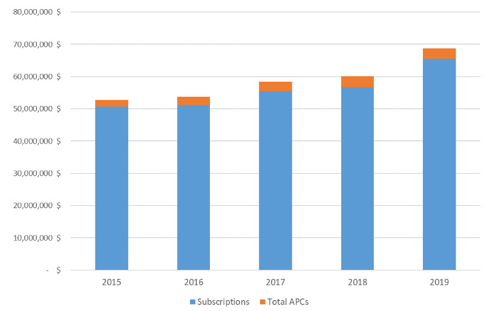

On the Never-Ending Serial Crisis and the Need to Re-Think Scholarly Publishing
Philippe Mongeon
School of Information
Management
Dalhousie University
2021-03-18
Is access to research a human right?

https://www.un.org/en/about-us/universal-declaration-of-human-rights
Scholarly publishing: a short story
The actors
The librarian

The researcher

The publisher
Genesis (1946-1991)
Buranyi, S. (2017, June 27). Is the staggeringly profitable business of scientific publishing bad for science? The Guardian. <https://www.theguardian.com/science/2017/jun/27/profitable-business-scientific-publishing-bad-for-science>
The corporate takeover of scholarly publishing (1946-1991)

Robert Maxwell owned Pergamon Press from 1951 to 1991.
The enrollment of researchers
“We would get dinner and fine wine, and at the end [Robert Maxwell] would present us a cheque – a few thousand pounds for the society. It was more money than us poor scientists had ever seen.” Leslie Iversen, former editor at the Journal of Neurochemistry
A limitless market
“Scientific articles are about unique discoveries: one article cannot substitute for another. If a serious new journal appeared, scientists would simply request that their university library subscribe to that one as well. If Maxwell was creating three times as many journals as his competition, he would make three times more money.” (Buranyi, 2017).
Price inelasticity
“Between 1975 and 1985, the average price of a journal doubled. The New York Times reported that in 1984 it cost $2,500 to subscribe to the journal Brain Research; in 1988, it cost more than $5,000” (Buranyi, 2017).
“Scientists are not as price-conscious as other professionals,
mainly because they are not spending their own money”
- Robert
Maxwell, 1988.
Elsevier buys Pergamon Press (1991)
“You have no idea how profitable these journals are once you stop doing anything. […]. We buy it and we stop doing all that stuff and then the cash just pours out and you wouldn’t believe how wonderful it is.” - Richard Charkin, former Macmillan CEO (as reported by Buranyi, 2017)
The breaking point
“By 1994, three years after acquiring Pergamon, Elsevier had raised its prices by 50%. Universities complained that their budgets were stretched to breaking point” (Buranyi, 2017)
The serials crisis
Expanditures of the 34 university libraries consistently reported in the ARL statistics (1986-2011)

The “Big Deals”
With the move to digital publishing in the late 1990s, the publishers offered access to all their electronic journals in a single package with fixed annual price increase.
Libraries could save money by canceling the print subscriptions.
Entrapment
“Academic library directors should not sign on to the Big Deal or any comprehensive licensing agreements with commercial publishers.” (Frazier, 2001)
Forced acquisition of journals that we don’t want or need.
Increased dependency on commercial publishers with monopolistic ambitions.
Increased control
Share of Web of Science publications published by the top 5 publishers

Increased profits
Elsevier’s scholarly publishing division reported profits and margins (1992-2013).

Serials crisis 2.0
Expanditures of the 34 university libraries consistently reported in the ARL statistics (1986-2011)
The 2010s push back
Editorial migrations
The entire board of the Journal of Informetrics resigned to launch a new open access journal, Quantitative Science Studies, on the basis that:
Scholarly journals should be owned by the scholarly community.
Journals should be open access under fair principles.
Citation data should be freely available.
Journal cancellations
A large number of Libraries around the world tried to take a hard line with their negotiations with the big publishers.
The journal usage project (JUP)
Commissioned by the Canadian Research Knowledge Network (CRKN) in 2016 to gain insight into usage, citations, and faculty perceptions of journal value at the institutional and national level.
28 participating universities.
Three indicators:
Downloads
References
Mentions
Concentration of journal usage
Cumulative distribution of downloads, references and mentions.

Do we need all these journals?
Distribution of journals from the Five major for-profit platforms by the number of universities that considered the journal essential.

Canadian university libraries licensing fees

Source: https://www.frdr-dfdr.ca/repo/dataset/7ece8cc3-1352-4c5f-8f86-df3f849f3e85

Open Access (OA) is a process that aims to make research output freely available on the public internet, allowing the users to read, download, copy, distribute, print, search or link to the full text without any financial, legal or technical barrier, in accordance with an open copyright license (usually CC-BY) (Budapest Open Access Initiative, 2002)
Green OA
Most publishing agreements allow the authors to make their work available online in places such as:
Institutional repositories (e.g., DalSpace)
Disciplinary repositories (e.g., PubMed Central, ArXiv, SocArXiv, BioRxiv)
Their own website
Information on individual journal policies: https://v2.sherpa.ac.uk/romeo/
Gold OA
The journal does not sell subscription to libraries and all published articles are openly available directly on the publisher’s website at the moment of publication.
This model typically (but not always) involves an article processing charge (APC) than can range from 0$ to 9500 Euros per paper.
Bronze OA
Articles are made available for free on the publisher’s website after an embargo period.
Hybrid OA
Subscription journals that allow researchers to pay a fee for their article to be openly available on the publishers website at the moment of publication.
This model widely criticized as a form of double-dipping since the journals are paid for by subscriptions.
The open access
movement gold
mine
Article processing charges vary from 0$ to 9500 Euros.

Exploiting the “publish or perish culture”?
Once they had exhausted the libraries’ capacity to pay they turned to the authors’ infinite need to publish - Mongeon (2021).
Open access mega journals
Charateristics
High publication volume
High acceptance rate
No instistance on novelty
Examples
Scientific Reports (Springer-Nature)
SAGE open (Sage)
SpringerPlus (Springer)
Adding up APCs and the subscriptions
Total subscription prices and APCs paid by Canadian universities between 2015 and 2019 for Elsevier, Sage, Taylor & Francis, and Wiley journals (Simard, Asubiaro & Mongeon 2021)

Transformative agreements:
“big deals”
2.0?
Tranformative agreements seek to shift scholarly publishing away from subscription-based models and towards open access.
The SAGE deal with Canadian Universities
6% increase to the “big deal” price.
Free hybrid OA for authors.
The Wiley deal with German universities
Access to the “big deal” journals restored.
Universities to pay 2,750 euros per articles authored by their researchers.
The Elsevier deal with the University of California
Access to the “big deal” journals restored.
Hybrid OA becomes the standard (authors need to opt-out)
First 1000$ paid by the University
Rest paid by the author
If the author has no research funds, the library will pay
Killing the competition?
Will authors choose to pay APCs to a small publisher that does not have a transformative deal with his institution?
Killing the will to change?
“Scientists are not as price-conscious as other professionals,
mainly because they are not spending their own money”
- Robert
Maxwell, 1988.
Rethinking scholarly publishing
If we consider accessing and participating to research as right, we must:
Eliminate the corporate for-profit logic from the scholarly publishing ecosystem
Replace it with a focus on equality and the public good
My ideal scholarly publishing landscape
The librarian
The researcher
The commercial publisher (1946-2021)

Thank you for your attention
Reach me at:
Pmongeon@dal.ca
Twitter: @philippemongeon